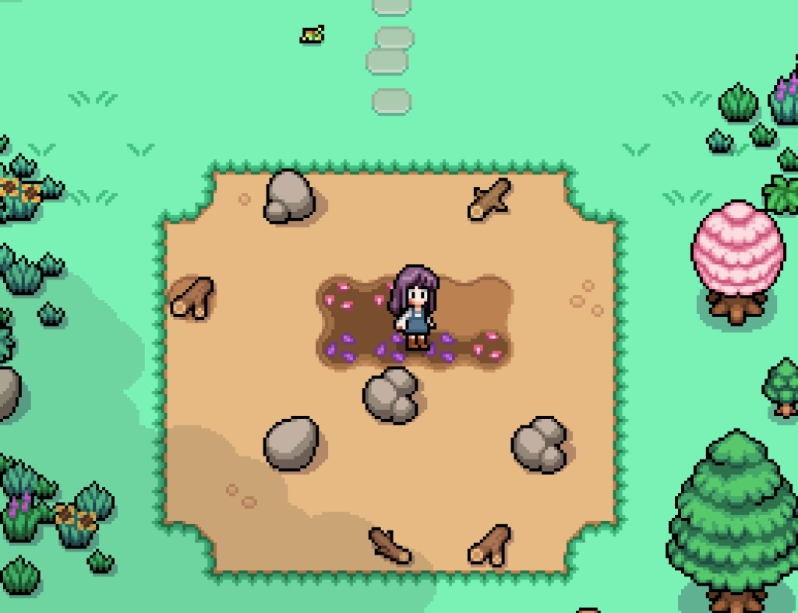
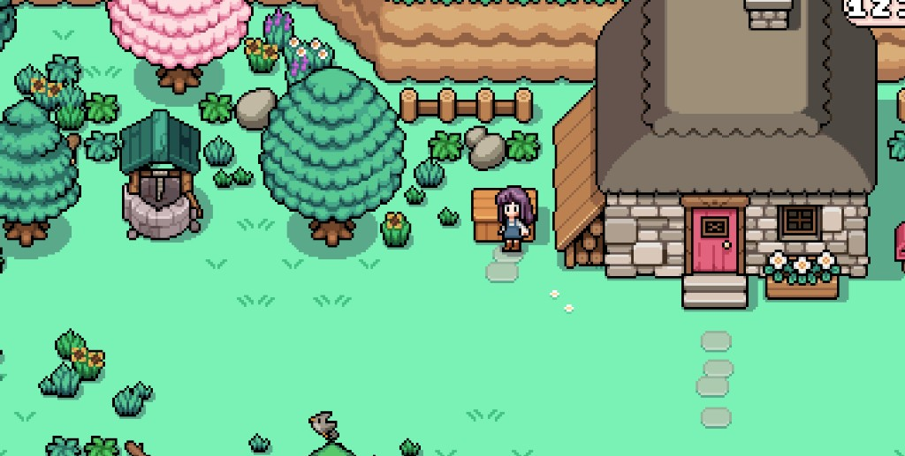
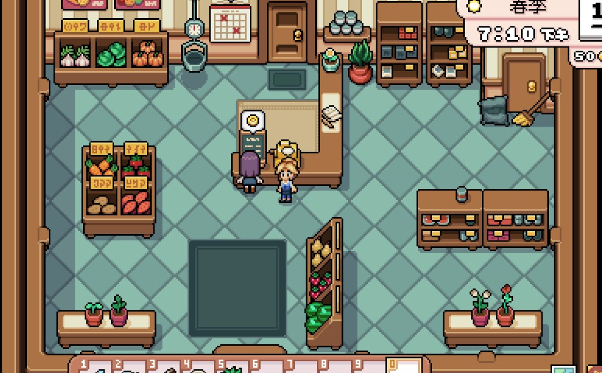
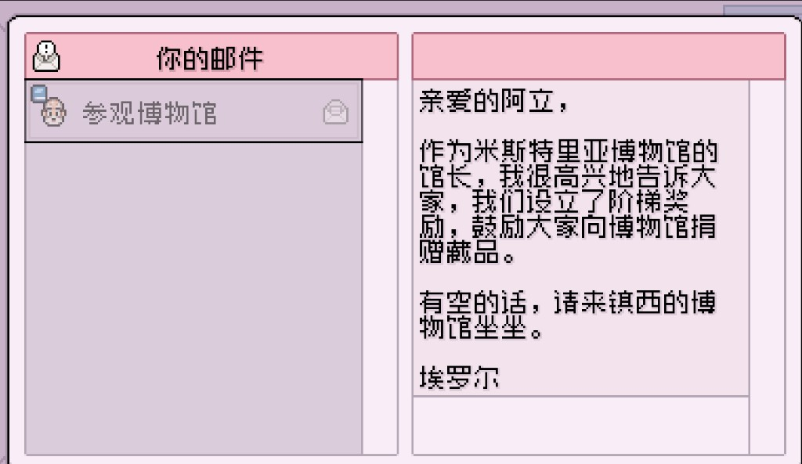

Quick answers
- Stabilize crops and energy before chasing every town event.
- Pick one afternoon job: forage, fish, mine, or clear debris.
- Help the town when it fits your route—don’t burn mornings on side errands.
- Romance and perfect gifts can wait until money and tools feel stable.
- Verify tip details in your own save and version.
Daily loop
- Check mail / urgent town notices.
- Water and harvest what you planted.
- Ship extras you won’t eat or craft.
- One outing with a clear stop (energy or time)—shop, short forage, or town hello.
- Sleep before you collapse—tomorrow’s crops matter more.
Fishing and the mines can wait until you have a rod and a calm energy buffer.
Early money priorities
Sell steady crops and obvious forage first. Tool upgrades that save daily energy usually beat cosmetic farm builds. Treat this as order of operations, not a profit spreadsheet.
Safe to skip (for now)
- Perfect friendship with everyone in week one
- Every collection goal on day one
- Every mine floor the moment it unlocks
- Full farm redesign before watering feels easy
First-season checklist
- Plant a small, waterable crop patch you can finish each morning
- Keep a chest near the house for tools and seeds
- Learn one shop’s busy pattern so you don’t waste walks
- Run one comfortable mine/forage route, then stop
- Upgrade the tool that hurts your mornings most
Screenshots from our save
Real Fields of Mistria shots from early farm and town days. Captions are in English; in-game UI language may differ.









FAQ
Do I need the wiki open while I play?
No. Use in-game menus and this checklist first. Look up one answer when stuck.
Should I romance someone early?
Optional. Gifts are fine if you already have extras; don’t farm gifts instead of crops.
Why do some screenshots show a different UI language?
Guides are written in English for search readers. Screenshots come from a real save and may use another UI language; captions explain what to look at.
Unofficial fan guide. Not affiliated with NPC Studio.